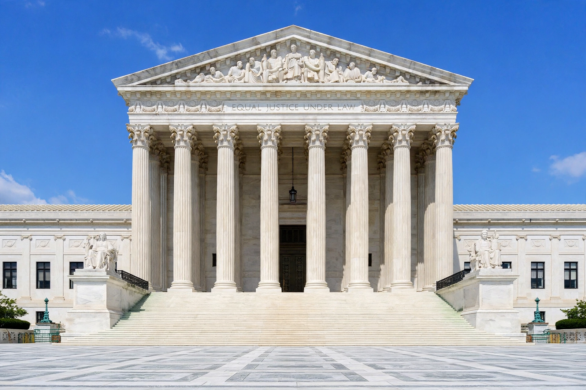

Supreme court
From Wikipedia, the free encyclopedia
A supreme court is the highest court within the hierarchy of courts in most legal jurisdictions. It ordinarily functions as a court of last resort, whose decisions bind all lower courts, and typically hears appeals on points of law rather than conducting trials. In many countries the supreme court also exercises constitutional jurisdiction; in others a separate constitutional court does so.

The Supreme Court of the United States in Washington, D.C. — the archetypal supreme court building, completed 1935.
Functions and composition
Supreme courts unify the interpretation of law nationally, resolve conflicts between lower courts, supervise the judiciary, and — where authorised — review the constitutionality of legislation and government action. Their judges are usually senior jurists appointed through politically significant processes (executive nomination with legislative consent, judicial councils, or mixed commissions), serving long or life terms to insulate them from pressure. Notable examples include the Supreme Court of the United States (established 1789, nine justices), the Supreme Court of the United Kingdom (created 2009, replacing the House of Lords' judicial role), the Supreme Court of India (the world's largest democracy's apex court, with a sanctioned strength in the mid-thirties), and the Supreme Court of Japan.
Design questions
Recurring debates involve appointment politics and term limits, the size of courts ("court packing" episodes, from the US 1937 controversy onward), transparency of deliberations, and the countermajoritarian tension when apex courts strike down legislation in democracies — questions sharpened in recent years by high-profile rulings and reform proposals in several countries.